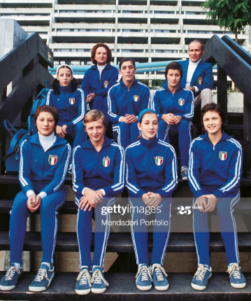

Rita Peri (ITA)
1975 Mediterranean Games AA Champion
1972 and 1976 Olympian

Rita was born on May 22, 1957 in Novara. She's a coach at Perseverant in Legnano, Italy.
Competition
Results
1970
ITA-GBR Dual Meet: 1st Team, 10th AA
ITA-YUG Dual Meet: 9th AA
1971
European Championships: 20th AA
GBR-ITA Dual Meet: 1st Team, 4th AA
ITA-NED Dual Meet: 2nd Team, 9th AA
Jr. FRG-ITA: 2nd AA
Mediterranean Games: 3rd AA, 1st B, 2nd FX, 3rd UB
1972
ESP-ITA Dual Meet: 1st Team, 4th AA
Italian Championships: 8th AA
Italian Olympic Qualification Meet: 3rd AA
ITA-CSSR Dual Meet: 2nd Team, 6th AA
ITA-HUN Dual Meet: 2nd Team, 10th AA
Olympic Games: 12th Team
YUG-ITA Dual Meet: 1st Team, 11th AA
1973
ITA-ESP Dual Meet: 1st Team, 3rd AA
NED-ITA Dual Meet: 1st Team, 4th Team
1974
Hungarian International: 11th AA
Italian Championships: 6th AA
ITA-NED Dual Meet: 1st Team, 2nd AA
World Championships: 13th Team
1975
International Championships of Romania: 7th AA
Italian Championships: 5th AA
Mediterranean Games: 1st AA
Pre-Olympic Test Event: 36th AA
1976
Olympic Games: 12th Team
This page was created on August 17, 2020.
© Gymn Forum